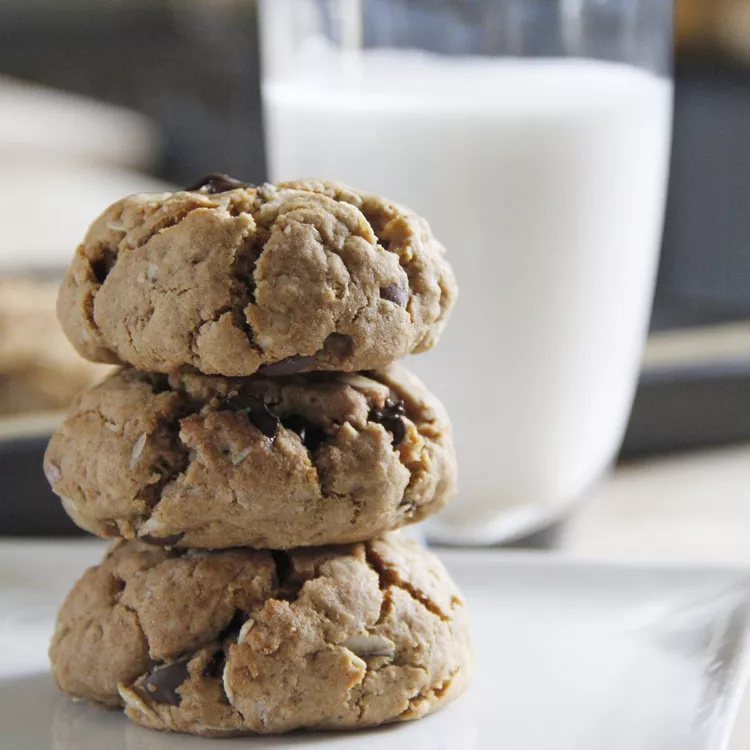

Description
Vegan chocolate chip cookies offer all the sweetness and chewiness of a classic cookie while using plant-based ingredients. They boast a golden, crispy edge with a soft, gooey center, making them irresistible to both vegans and non-vegans alike.
With simple swaps like plant-based butter and dairy-free chocolate chips, these cookies provide a cruelty-free treat that doesn’t compromise on flavor. Perfect for a snack or dessert, they are best enjoyed warm with a glass of almond milk.
Ingredients
- 2 cups all-purpose flour
- 1 teaspoon baking soda
- ½ teaspoon salt
- ½ cup coconut oil or vegan butter
- ¾ cup brown sugar
- ¼ cup plant-based milk
- 1 teaspoon vanilla extract
- 1 cup dairy-free chocolate chips
Steps
- Preheat the oven to 180°C (350°F) and line a baking sheet with parchment paper.
- In a bowl, mix flour, baking soda, and salt.
- In a separate bowl, whisk coconut oil, brown sugar, plant-based milk, and vanilla extract until smooth.
- Gradually add dry ingredients to the wet mixture, stirring until combined. Fold in chocolate chips.
- Scoop spoonfuls of dough onto the baking sheet, spacing them evenly.
- Bake for 10-12 minutes, until golden brown.
- Allow to cool before enjoying.
Back to the homepage.